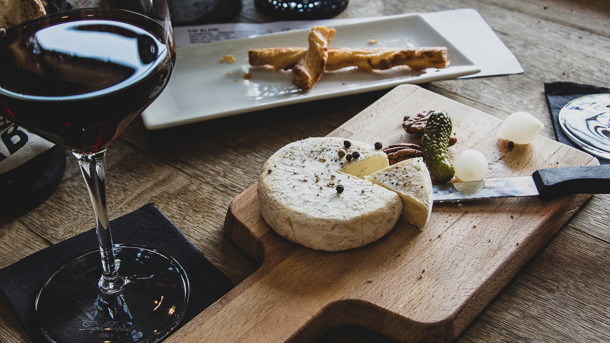
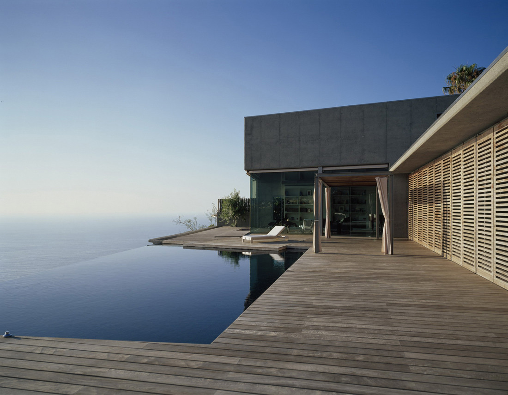

En general, el Hotel Pórtico de Tenerife es un lugar perfecto para aquellos que buscan una experiencia de vacaciones relajante y lujosa en una de las islas más hermosas de España. Con sus impresionantes vistas al océano, sus instalaciones de primera clase y su servicio excepcional, este hotel es verdaderamente una joya escondida en la costa de Tenerife.

La gastronomía canaria es una experiencia única y sabrosa que cualquier amante de la comida debería probar. Con su combinación de ingredientes locales frescos y sabores vibrantes, esta cocina es verdaderamente una joya culinaria de España.
La gastronomía canaria es una rica mezcla de sabores y texturas que refleja la diversidad de esta hermosa región española. Los platos típicos de las Islas Canarias incluyen ingredientes como papas arrugadas, mojo picón, gofio y pescado fresco, todos los cuales son esenciales en la cocina de las islas.
Una de las comidas más populares en las Islas Canarias son las papas arrugadas, que son papas pequeñas cocidas en agua salada y servidas con mojo picón, una salsa picante hecha de pimiento, ajo, aceite de oliva y vinagre. Esta comida es considerada un verdadero clásico canario y se encuentra en la mayoría de los restaurantes de las islas.
Otro plato popular en las Islas Canarias es el sancocho, un guiso de pescado hecho con varios tipos de pescado fresco, papas, cebolla y ajo. También es común el uso de gofio, un tipo de harina tostada de trigo o maíz, que se utiliza para espesar y dar sabor a muchos platos canarios.
Los postres canarios son igualmente deliciosos, con platos como las quesadillas, un pastel hecho con queso fresco y masa de harina, y el bienmesabe, un postre a base de almendras y miel que se sirve frío.

El Hotel Tenerife es un alojamiento de lujo ubicado en la hermosa isla de Tenerife, en las Islas Canarias de España. Este hotel ofrece un ambiente relajante y una gran cantidad de comodidades que lo hacen perfecto para aquellos que buscan una escapada tranquila y elegante.
Me encantó
La mejor de las cenas
Habitaciones impecables
Nuestras habitaciones